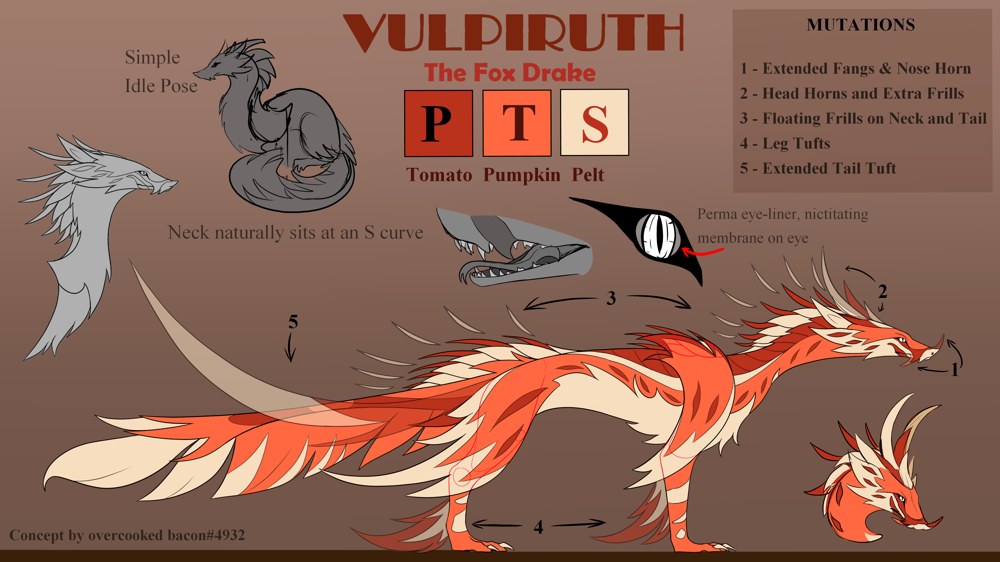
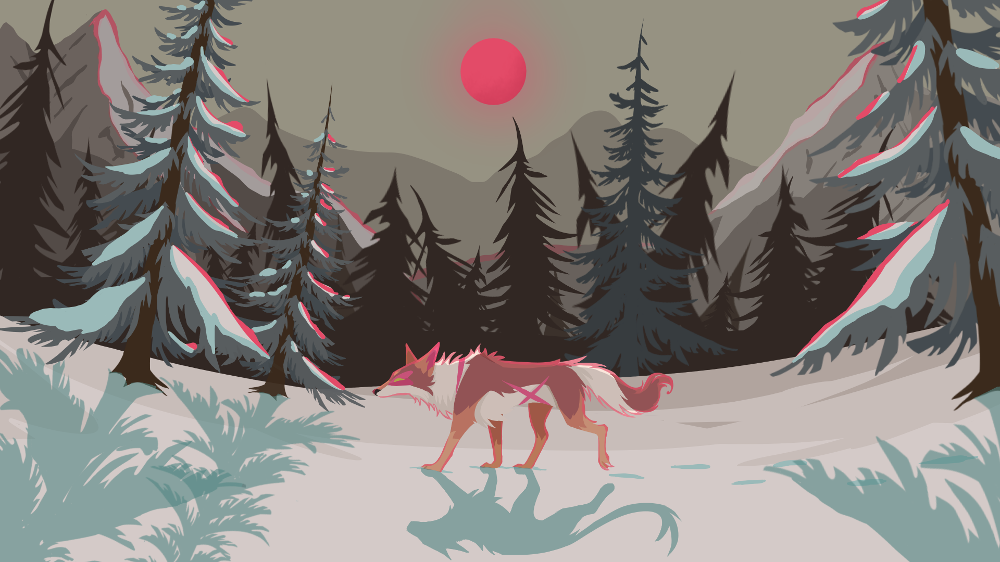
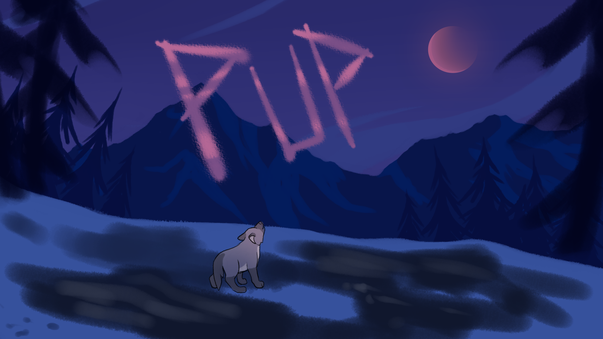

Lily Pinson
Hello! I'm Lily, a passionate Artist and Game Designer. Welcome to my portfolio website, where you can learn more about me, my projects, and how to get in touch.
About Me

My Passion for Art and Storytelling
Art and storytelling have always been at the core of who I am. From the moment I could hold a pencil, I was captivated by the power of visual storytelling. My journey as an artist has been a continuous exploration of creativity, where I strive to create immersive experiences that resonate with people on a deeper level. I often find inspiration in the world around me, often pulling emotional connection and meaning from the mundane. I believe that art has the ability to transcend boundaries and connect us all.
Art In The Technical
In the past few years, I have delved into the world of game design, where I have discovered a new dimension to my artistic expression. Game design allows me to combine my love for art with my passion for storytelling, creating interactive experiences that engage and captivate players. I am constantly exploring new techniques and technologies to push the boundaries of what is possible in game design, always striving to create unique and memorable experiences while still connecting with my own personal art.
Portfolio
Here are some of my projects:
Dragon Adventures Concept Art
Freelance Artwork & Commissions
PUP - Individual Unity Game
Bi-Directional Flow of Time

Skills
-
2D Art
I have a strong foundation in 2D art, specializing in creating visually appealing illustrations and concept art for games and storytelling projects. I have been a long time artist, particularly specializing in concept art for 3D games.
-
Design
My design skills include creating user-friendly interfaces, layouts, and assets that enhance the overall user experience. I prioritize functionality and practicality in my creative designs.
-
Animation
I have experience in 2D animation, bringing characters and environments to life with smooth and engaging motion. For several years, I have practiced 2D animation and storytelling.
-
Web Development
I have experience working with HTML, CSS, and JavaScript, building responsive and visually appealing websites with clean and maintainable code. I also create interactive and dynamic web applications using modern frameworks and libraries.
-
Game Development
I have utilized both Unity and Unreal Engine for game development, leveraging their capabilities to create interactive gameplay mechanics and systems. My experience includes designing and implementing engaging game features.
Contact
Email: pinson.lilya@gmail.com
Resume: Download my resume
Phone: (208) 631 1887
LinkedIn: https://www.linkedin.com/in/lily-pinson-937a44346/